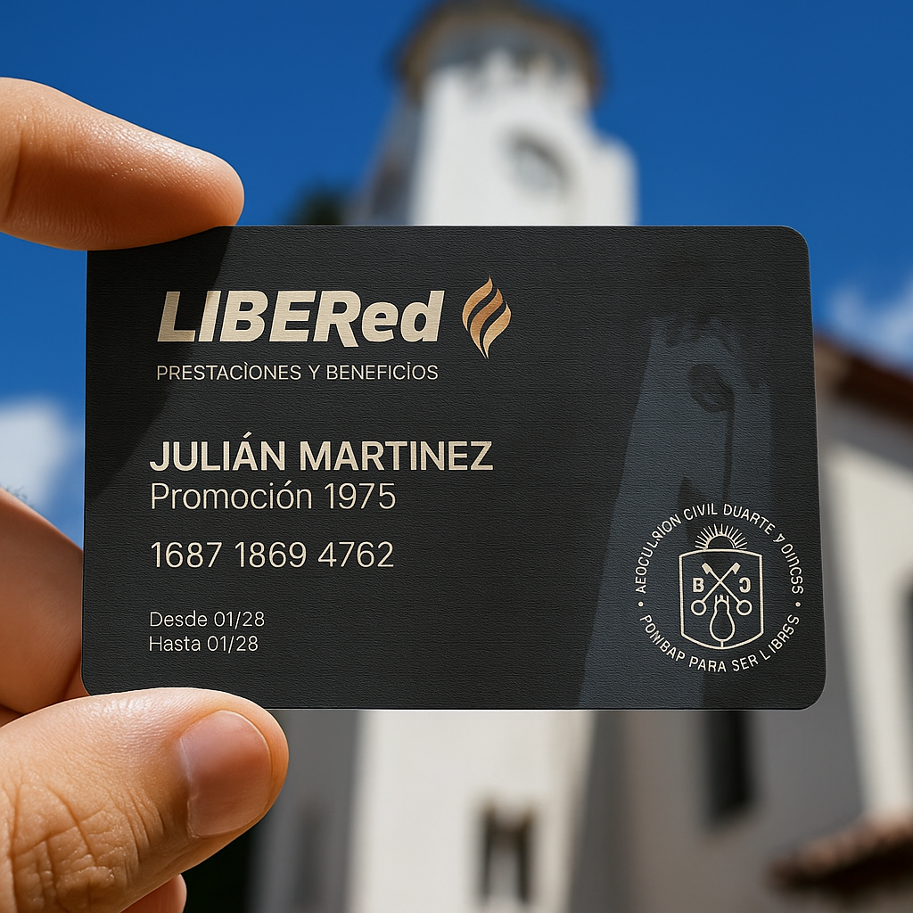

Estimados Camaradas,
A partir del mes de mayo todos quienes hayan completado correctamente los datos solicitados en el formulario de inscripción tendrán a disposición una tarjeta personalizada que los identificará como socios de la institución tal como lo establece nuestro estatuto.
Luego de las inquietudes que nos formularan las promociones egresadas con el propósito de reducir las restricciones para ingresar al colegio, llegamos a un acuerdo con sus autoridades para poder ingresar nuevamente y visitarlo cuando los camaradas lo deseen.
En consonancia con este objetivo, el único "requisito indispensable" para formalizarlo será la presentación de la tarjeta al momento del ingreso. La asociación, a su vez, asistirá y acompañará al camarada para facilitarle la tarea. Habrá un protocolo con las condiciones a tener en cuenta para aprovechar al máximo la visita.
Así culmina exitosamente, el primer objetivo que diera origen a la tarjeta: acceder nuevamente al colegio, visitarlo y circular libremente por él.
Aprovechando esta implementación y tomando nota de las propuestas de los camaradas de numerosas promociones, la asociación creó la red LIBER para brindarle beneficios y soluciones a sus integrantes en distintas disciplinas y rubros.
El estatuto que nos rige prevé dos clases de socios: activos y adherentes.
Los socios activos recibirán una cobertura plena con todos los beneficios que le brinde la red (prestaciones profesionales, descuentos en compras de productos y servicios, promociones especiales, etc.). Tendrán derecho de voz y voto en las asambleas y, por tanto, podrán incidir en el futuro de la institución. En contraprestación deberán abonar una cuota social fija de $ 10.000 (Diez mil) del 1 al 10 de cada mes, debiendo estar al día para no perder la cobertura.
Quienes no puedan abonar dicho importe, tendrán el carácter de socios adherentes y recibirán una cobertura parcial no pudiendo votar en las asambleas por disposición estatutaria. Los socios activos que hayan adelantado en un sólo pago las cuotas mensuales correspondientes al año 2026, o bien, aquellos que lo hagan mensualmente, no pagarán el costo de impresión de la tarjeta. Los socios adherentes, en cambio, abonarán este costo por única vez como se especifica más adelante.
Ambos tendrán la misma consideración y el mismo estatus por parte de la institución solo que la cobertura plena, en el caso de los socios activos, es para que puedan recuperar el importe que abonen en carácter de cuota mensual.
Este aporte de los socios activos tiene una extraordinaria importancia porque permite el funcionamiento y desarrollo de las tres áreas de la asociación (social, cultural y deportiva) contribuyendo de manera solidaria con los compañeros que tengan dificultades, soliciten colaboracion o necesiten ayuda.
Los socios activos podrán optar por el pago mediante débito automático, transferencia del 1 al 10 de cada mes, o bien, abonar la cuota en la sede de la asociación. Cualquiera sea la opción elegida, les enviaremos un recordatorio para estar al día y mantener la cobertura de las prestaciones profesionales y el resto de los beneficios de la Red LIBER.
Los socios adherentes abonarán por única vez $12.000 (Doce Mil) equivalente al costo de impresión de la tarjeta. La misma, irá acompañada de un instructivo para que el titular conozca todos los detalles de su funcionamiento, alcance y cobertura.